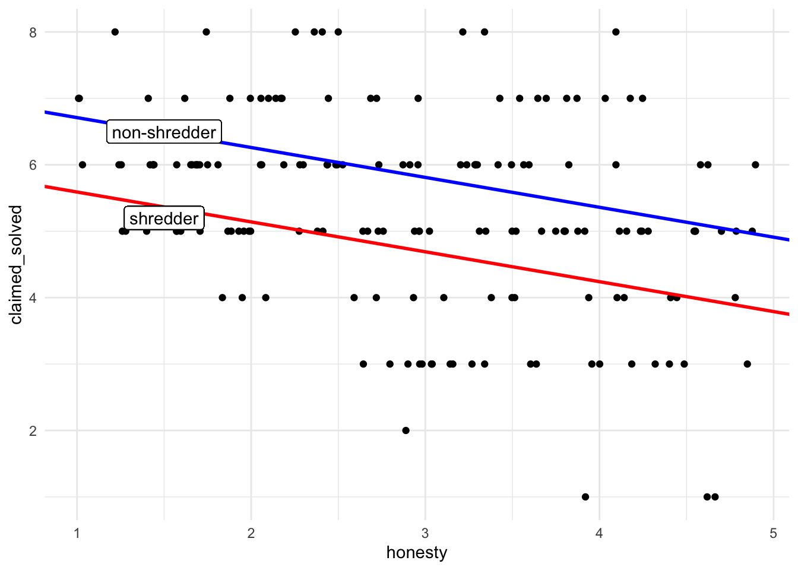

library(tidyverse)
library(psych) #for generating easy descriptives
library(emmeans) #for examining simple slopes
library(performance) #for examining multicollinaerity
library(interactions) #for plotting simple slopesModule 8: Lab Starter KEY
Purpose
Today we will review how to run models containing interactions: (1) between a continuous and categorical predictor and (2) between two continuous predictors. We will go over how to specify interaction terms in R, how to interpret the model output, and how to visualize the results.
For today’s lab, you will need to load the following libraries.
Research scenario
Today’s dataset was inspired by a recent study by Markowitz & Levine (2021) (the data you will be working with has been simulated). In the study, participants completed a matrix task under time pressure and then self-reported their scores. For each matrix problem that they got right, they could earn 25 cents, so it was tempting to cheat and self-report a higher score. Half of the participants shredded their worksheet before self-reporting and half of the participants handed the worksheet to the experimenter before self-reporting. Honesty scores were also self-reported from the HEXACO Personality Inventory (from 1 = extremely low honesty to 5 = extremely high honesty). The researchers hypothesized that personality and situation would interact to predict dishonest behavior.
Read in the data
First, let’s read in the data and then use View() to check it out.
Today’s first dataset is called cheating_data.csv. Let’s read it in and name it cheat.
Explore the data
- Use
str()to look at the structure of the data - Use
head()to look at the first few rows of the data - Calculate descriptives (i.e., mean and sd) for the variables
honestyandclaimed_solved - Calculate descriptives (i.e., mean and sd) for the variables
honestyandclaimed_solved, grouped bycondition
#students: take a few minutes to check out the data
# your code here
str(cheat)spc_tbl_ [164 × 4] (S3: spec_tbl_df/tbl_df/tbl/data.frame)
$ condition : chr [1:164] "shredder" "shredder" "shredder" "shredder" ...
$ honesty : num [1:164] 1.44 3.3 1.83 1.22 2.72 ...
$ claimed_solved: num [1:164] 6 6 4 8 7 5 5 5 7 6 ...
$ confidence : num [1:164] 0.9162 -0.9379 5.1178 2.0934 0.0824 ...
- attr(*, "spec")=
.. cols(
.. condition = col_character(),
.. honesty = col_double(),
.. claimed_solved = col_double(),
.. confidence = col_double()
.. )
- attr(*, "problems")=<externalptr> head(cheat)# A tibble: 6 × 4
condition honesty claimed_solved confidence
<chr> <dbl> <dbl> <dbl>
1 shredder 1.44 6 0.916
2 shredder 3.30 6 -0.938
3 shredder 1.83 4 5.12
4 shredder 1.22 8 2.09
5 shredder 2.72 7 0.0824
6 shredder 2.00 5 -0.631 cheat %>%
summarize(mean = mean(honesty, na.rm = TRUE),
sd = sd(honesty, na.rm = TRUE))# A tibble: 1 × 2
mean sd
<dbl> <dbl>
1 2.95 1.03# or
describe(cheat$honesty) vars n mean sd median trimmed mad min max range skew kurtosis se
X1 1 164 2.95 1.03 2.96 2.94 1.28 1.01 4.9 3.89 0.02 -1.07 0.08cheat %>%
summarize(mean = mean(claimed_solved, na.rm = TRUE),
sd = sd(claimed_solved, na.rm = TRUE))# A tibble: 1 × 2
mean sd
<dbl> <dbl>
1 5.28 1.50# or
describe(cheat$claimed_solved) vars n mean sd median trimmed mad min max range skew kurtosis se
X1 1 164 5.28 1.5 5 5.33 1.48 1 8 7 -0.43 -0.02 0.12cheat %>%
group_by(condition) %>%
summarize(n = n(),
mean_honesty = mean(honesty, na.rm = TRUE),
sd_honesty = sd(honesty, na.rm = TRUE),
mean_claimed = mean(claimed_solved, na.rm = TRUE),
sd_claimed = sd(claimed_solved, na.rm = TRUE))# A tibble: 2 × 6
condition n mean_honesty sd_honesty mean_claimed sd_claimed
<chr> <int> <dbl> <dbl> <dbl> <dbl>
1 non-shredder 81 3.05 1.02 4.67 1.60
2 shredder 83 2.85 1.05 5.88 1.11Simple regression
First, let’s look at what the overall relation between honesty and number of problems people claimed they solved looks like.
Graph in ggplot().
#students: fill in the code below
cheat %>%
ggplot(aes(x = honesty, y = claimed_solved)) +
geom_point()+
geom_smooth(method = "lm", se = FALSE)+
theme_minimal()`geom_smooth()` using formula = 'y ~ x'Question: From the graph, what can you say about the relation betwen honesty and the number of problems people claimed the solved?
Second, let’s perform a simple regression model using honesty as a single predictor of number of problems people claimed they solved, claimed_solved.
\[\hat{claimed_i} = \beta_0 + \beta_1honesty \]
Run this model using lm().
#students: fill in the model
model_simple <- lm(claimed_solved ~ honesty, data = cheat)
summary(model_simple)
Call:
lm(formula = claimed_solved ~ honesty, data = cheat)
Residuals:
Min 1Q Median 3Q Max
-3.7943 -0.9189 0.0864 0.8906 3.2935
Coefficients:
Estimate Std. Error t value Pr(>|t|)
(Intercept) 6.7614 0.3334 20.282 < 2e-16 ***
honesty -0.5019 0.1067 -4.706 5.4e-06 ***
---
Signif. codes: 0 '***' 0.001 '**' 0.01 '*' 0.05 '.' 0.1 ' ' 1
Residual standard error: 1.408 on 162 degrees of freedom
Multiple R-squared: 0.1202, Adjusted R-squared: 0.1148
F-statistic: 22.14 on 1 and 162 DF, p-value: 5.396e-06Question: Write the full model with parameter estimates filled in.
Question: What do each of the parameter estimates mean?
Main Effects of Categorical & Continuous Variables
Let’s look at a model that investigates both honesty and condition as predictors of claimed_solved, but not their interaction.
\[\hat{claimed_i} = \beta_0 + \beta_1honesty + \beta_2condition\]
Run this model using lm().
#students: fill in the model
# your code here
model_main_effects <- lm(claimed_solved ~ honesty + condition, data = cheat)
summary(model_main_effects)
Call:
lm(formula = claimed_solved ~ honesty + condition, data = cheat)
Residuals:
Min 1Q Median 3Q Max
-3.2772 -0.8752 -0.0496 0.8876 3.0237
Coefficients:
Estimate Std. Error t value Pr(>|t|)
(Intercept) 6.03706 0.33345 18.105 < 2e-16 ***
honesty -0.44900 0.09856 -4.556 1.03e-05 ***
conditionshredder 1.12294 0.20322 5.526 1.29e-07 ***
---
Signif. codes: 0 '***' 0.001 '**' 0.01 '*' 0.05 '.' 0.1 ' ' 1
Residual standard error: 1.295 on 161 degrees of freedom
Multiple R-squared: 0.2605, Adjusted R-squared: 0.2513
F-statistic: 28.36 on 2 and 161 DF, p-value: 2.816e-11Question: Write the full model with parameter estimates filled in.
Question: What do each of the parameter estimates mean?
Question: How would you simplify the above equation to represent the relationship between honesty and number of problems people claim to have solved for the non-shredder (condition = 0) and shredder conditions (condition = 1)?
Notice that the only difference between these two equations are their intercepts. If we graphed the two models, let’s see what it would look like.
cheat %>%
ggplot(aes(x = honesty, y = claimed_solved)) +
geom_point() +
geom_abline(slope = -.45, intercept = 6.04, color = "red", size = 1) +
geom_abline(slope = -.45, intercept = 7.16, color = "blue", size = 1) +
geom_label(x = 1.5, y = 5.2, label = "shredder") +
geom_label(x = 1.5, y =6.5, label = "non-shredder") +
theme_minimal()Warning: Using `size` aesthetic for lines was deprecated in ggplot2 3.4.0.
ℹ Please use `linewidth` instead.
We are not allowing the relationship between honesty and claimed_solved to differ between the two shredder and non-shredder conditions.
However, our theory predicts that people will act differently depending on the condition that they were in. To investigate this, we need to include the interaction effect to examine whether the relationship between honesty and number of problems people claimed they solves differs depending on whether people were in the non-shredder or shredder condition.
Continuous x Categorical Interaction
Visualization
First, let’s graph the continuous X categorical interaction between honesty and condition.
#students: fill in the code below
# on a single graph
cheat %>%
ggplot(aes(x = honesty, y = claimed_solved)) +
geom_point()+
geom_smooth(method = "lm", se = FALSE, aes(color = condition)) +
scale_color_manual(values = c("red", "blue")) +
theme_minimal()`geom_smooth()` using formula = 'y ~ x'# on two separate graphs
cheat %>%
ggplot(aes(x = honesty, y = claimed_solved)) +
geom_point()+
geom_smooth(method = "lm", se = FALSE, aes(color = condition))+
facet_wrap(~condition) +
scale_color_manual(values = c("red", "blue")) +
theme_minimal()`geom_smooth()` using formula = 'y ~ x'It certainly looks like there could be a significant interaction effect. Let’s run the multiple regression model to examine it further.
Centering
Notice that in this case, honesty has been measured on a 1 to 5 scale. If we do not center honesty first, the model intercept will correspond to the predicted claimed_solved score when honesty = 0, a value that falls outside of the range of possible ones.
Typically, the continuous variables will be centered prior to running the analysis. This guarantees that the intercept will intersect the y-axis at a meaningful value (when the predictor is equal to its mean).
cheat <- cheat %>%
mutate(honesty_c = honesty - mean(honesty, na.rm = TRUE)) # subtract the meanRunning the Interaction Model
Run a multiple regression model predicting claimed_solved from honest_c, condition, and the interaction between the two.
#students: create the interaction model
model_int <- lm(claimed_solved ~ honesty_c*condition, data = cheat)
summary(model_int)
Call:
lm(formula = claimed_solved ~ honesty_c * condition, data = cheat)
Residuals:
Min 1Q Median 3Q Max
-2.9265 -0.8677 0.0491 1.0581 3.3533
Coefficients:
Estimate Std. Error t value Pr(>|t|)
(Intercept) 4.7531 0.1379 34.476 < 2e-16 ***
honesty_c -0.8532 0.1356 -6.294 2.84e-09 ***
conditionshredder 1.1190 0.1938 5.775 3.89e-08 ***
honesty_c:conditionshredder 0.7781 0.1881 4.137 5.66e-05 ***
---
Signif. codes: 0 '***' 0.001 '**' 0.01 '*' 0.05 '.' 0.1 ' ' 1
Residual standard error: 1.235 on 160 degrees of freedom
Multiple R-squared: 0.332, Adjusted R-squared: 0.3194
F-statistic: 26.5 on 3 and 160 DF, p-value: 5.695e-14Question: What is the full model with parameter estimates filled in?
Question: What do each of the parameter estimates mean?
The simple slopes are the slopes representing the relationship between predictor 1 and Y at specific levels of predictor 2. We can get simple slopes to examine what the relationship is between honesty_c and claimed_solved at different levels of condition.
Testing Significance of Simple Slopes
To get the simple slopes we can use the emtrends function from the emmeans package.
There are different questions we can ask by calculating simple slopes and performing hypothesis tests with them.
Q1: Is honesty a significant predictor of number of problems people claim to have solved at each level of condition (non-shredder & shredder conditions)?
emtrends(model_int, ~condition, var = "honesty_c") %>%
test() condition honesty_c.trend SE df t.ratio p.value
non-shredder -0.8532 0.136 160 -6.294 <.0001
shredder -0.0751 0.130 160 -0.576 0.5655Q2: Is the slope for the non-shredder condition (-0.85) significantly different from the slope for the shredder condition (-0.08)?
emtrends(model_int, pairwise~condition, var = "honesty_c")$emtrends
condition honesty_c.trend SE df lower.CL upper.CL
non-shredder -0.8532 0.136 160 -1.121 -0.586
shredder -0.0751 0.130 160 -0.333 0.182
Confidence level used: 0.95
$contrasts
contrast estimate SE df t.ratio p.value
(non-shredder) - shredder -0.778 0.188 160 -4.137 0.0001This is the same as the test of the interaction effect from the overall model.
In the interest of practicing Continuous x Continuous interactions, I have added a variable to the dataset called confidence that is a general measure of participants confidence trait. This variable ranges from -12 to 12.
Main Effects of Two Categorical Variables
As we did above, let’s look at a model that investigates both honesty and confidence as predictors of claimed_solved, but not their interaction.
\[\hat{Claimed_i} = \beta_0 + \beta_1honesty + \beta_2confidence\]
Run this model using lm().
#students: fill in the code
model2_main_effects <- lm(claimed_solved ~ honesty + confidence, data = cheat)
summary(model2_main_effects)
Call:
lm(formula = claimed_solved ~ honesty + confidence, data = cheat)
Residuals:
Min 1Q Median 3Q Max
-3.8686 -0.9405 0.0942 0.9235 3.1882
Coefficients:
Estimate Std. Error t value Pr(>|t|)
(Intercept) 6.71736 0.34447 19.501 < 2e-16 ***
honesty -0.49930 0.10701 -4.666 6.43e-06 ***
confidence 0.01244 0.02364 0.526 0.599
---
Signif. codes: 0 '***' 0.001 '**' 0.01 '*' 0.05 '.' 0.1 ' ' 1
Residual standard error: 1.411 on 161 degrees of freedom
Multiple R-squared: 0.1218, Adjusted R-squared: 0.1108
F-statistic: 11.16 on 2 and 161 DF, p-value: 2.89e-05Question: Write the full model with parameter estimates filled in.
Question: What do each of the parameter estimates mean?
Check Collinaerity
Let’s examine our model to see if we have any multicolinaerity issues.
check_collinearity(model2_main_effects)# Check for Multicollinearity
Low Correlation
Term VIF VIF 95% CI Increased SE Tolerance Tolerance 95% CI
honesty 1.00 [1.00, Inf] 1.00 1.00 [0.00, 1.00]
confidence 1.00 [1.00, Inf] 1.00 1.00 [0.00, 1.00]Question: Do you see any multicollinearity issues?
Visualization
Next, let’s examine the relation between honesty and claimed_solved and confidence and claimed_solved.
cheat %>%
ggplot(aes(x = honesty, y = claimed_solved)) +
geom_point()+
geom_smooth(method = "lm", se = FALSE)+
theme_minimal()`geom_smooth()` using formula = 'y ~ x'
cheat %>%
ggplot(aes(x = confidence, y = claimed_solved)) +
geom_point()+
geom_smooth(method = "lm", se = FALSE)+
theme_minimal()`geom_smooth()` using formula = 'y ~ x'Question: What is the relation between
claimed_solvedand each of these variables?
Continuous x Continuous Interaction
Now, let’s add the interaction term to test whether the effect of confidence on claimed_solved depends on honesty (or vice versa).
model2_int <- lm(claimed_solved ~ honesty*confidence, data = cheat)
summary(model2_int)
Call:
lm(formula = claimed_solved ~ honesty * confidence, data = cheat)
Residuals:
Min 1Q Median 3Q Max
-3.6763 -0.9548 0.1051 0.9335 3.5488
Coefficients:
Estimate Std. Error t value Pr(>|t|)
(Intercept) 6.06318 0.42321 14.327 < 2e-16 ***
honesty -0.32235 0.12562 -2.566 0.01120 *
confidence 0.25486 0.09691 2.630 0.00938 **
honesty:confidence -0.06864 0.02664 -2.577 0.01088 *
---
Signif. codes: 0 '***' 0.001 '**' 0.01 '*' 0.05 '.' 0.1 ' ' 1
Residual standard error: 1.387 on 160 degrees of freedom
Multiple R-squared: 0.1567, Adjusted R-squared: 0.1409
F-statistic: 9.914 on 3 and 160 DF, p-value: 4.944e-06Question: Is the interaction significant?
Let’s check for multicollinearity in this model.
check_collinearity(model2_int)Model has interaction terms. VIFs might be inflated.
Try to center the variables used for the interaction, or check
multicollinearity among predictors of a model without interaction terms.# Check for Multicollinearity
Low Correlation
Term VIF VIF 95% CI Increased SE Tolerance Tolerance 95% CI
honesty 1.43 [ 1.23, 1.81] 1.20 0.70 [0.55, 0.81]
High Correlation
Term VIF VIF 95% CI Increased SE Tolerance
confidence 17.43 [13.13, 23.25] 4.17 0.06
honesty:confidence 17.61 [13.27, 23.49] 4.20 0.06
Tolerance 95% CI
[0.04, 0.08]
[0.04, 0.08]Question: Is there multicollinaerity? What could you do to fix it?
Centering
Typically, when you have an interaction, it is good practice to center your continuous predictors.
We already created the centered honesty predictor. Let’s do the same for confidence.
#students: fill in code
cheat <- cheat %>%
mutate(confidence_c = confidence - mean(confidence, na.rm = TRUE)) # subtract the meanRunning the Interaction Model
Run a multiple regression model predicting claimed_solved from honest_c, confidence_c, and the interaction between the two.
#students: fill in the code and run this model
model2_int_c <- lm(claimed_solved ~ honesty_c*confidence_c, data = cheat)
summary(model2_int_c)
Call:
lm(formula = claimed_solved ~ honesty_c * confidence_c, data = cheat)
Residuals:
Min 1Q Median 3Q Max
-3.6763 -0.9548 0.1051 0.9335 3.5488
Coefficients:
Estimate Std. Error t value Pr(>|t|)
(Intercept) 5.26531 0.10848 48.538 < 2e-16 ***
honesty_c -0.52347 0.10560 -4.957 1.81e-06 ***
confidence_c 0.05232 0.02792 1.874 0.0628 .
honesty_c:confidence_c -0.06864 0.02664 -2.577 0.0109 *
---
Signif. codes: 0 '***' 0.001 '**' 0.01 '*' 0.05 '.' 0.1 ' ' 1
Residual standard error: 1.387 on 160 degrees of freedom
Multiple R-squared: 0.1567, Adjusted R-squared: 0.1409
F-statistic: 9.914 on 3 and 160 DF, p-value: 4.944e-06Let’s check this model for multicollinearity.
check_collinearity(model2_int_c)# Check for Multicollinearity
Low Correlation
Term VIF VIF 95% CI Increased SE Tolerance
honesty_c 1.01 [1.00, 29176.65] 1.01 0.99
confidence_c 1.45 [1.24, 1.83] 1.20 0.69
honesty_c:confidence_c 1.46 [1.25, 1.85] 1.21 0.69
Tolerance 95% CI
[0.00, 1.00]
[0.55, 0.81]
[0.54, 0.80]Question: Did centering sufficiently reduce multicollinearity?
Question: What is the full model with parameter estimates filled in?
Question: What do each of the parameter estimates mean?
Simple Slopes
The simple slopes are the slopes representing the relationship between predictor 1 and Y at specific levels of predictor 2. As above, we can get simple slopes to examine what the relationship is between honesty_c and claimed_solved at different levels of confidence. However, because confidence is continuous, we need to determine what constitutes low, medium, and high levels.
Calculating Simple Slopes
First, let’s determine what constitutes low, medium, and high. We don’t have any pre-existing theories about what these values should be, so we’ll use -1SD (low) and +1SD (high).
#What is the standard deviation of our confidence variable?
sd(cheat$confidence_c, na.rm = TRUE)[1] 4.680503#Now, use this to create low, medium, and high values
low <- mean(cheat$confidence_c, na.rm = TRUE) - sd(cheat$confidence_c, na.rm = TRUE)
medium <- 0 #technically this should be zero, but this is close enough!
high <- mean(cheat$confidence_c, na.rm = TRUE) + sd(cheat$confidence_c, na.rm = TRUE)Question: How would we rearrange our equation to isolate the effect of
honesty_conclaimed_solvedat various levels ofconfidence_c?
Question: Use this equation to calculate the intercept and slope of
honesty_cat low, medium, and high levels ofconfidence_c.
Plotting Simple Slopes
Now, we will use the interact_plot() function from the {interactions} package to plot the slope of honesty_c on claimed_solved at low, medium, and high levels of [VARIABLE].
interact_plot(model2_int_c, pred = honesty_c, modx = confidence_c, interval = TRUE, plot.points = TRUE)Testing Significance of Simple Slopes
To get the simple slopes and associated significance we can use the emtrends function from the emmeans package.
Does the slope of honesty on claimed_solve differ from zero across different values of confidence_c?
mylist <- list(confidence_c=c(round(high, 1), round(medium,1), round(low, 1)))
emtrends(model2_int_c,~confidence_c, var="honesty_c", at=mylist) %>%
test(adjust="holm") confidence_c honesty_c.trend SE df t.ratio p.value
4.7 -0.846 0.171 160 -4.953 <.0001
0.0 -0.523 0.106 160 -4.957 <.0001
-4.7 -0.201 0.156 160 -1.284 0.2011
P value adjustment: holm method for 3 tests Question: Which slopes differ from zero? Which do not?
Question: Given the plot and simple slopes test, what can we say about the effect of
honesty_conclaimed_solvedat low, medium, and high levels ofconfidence_c?